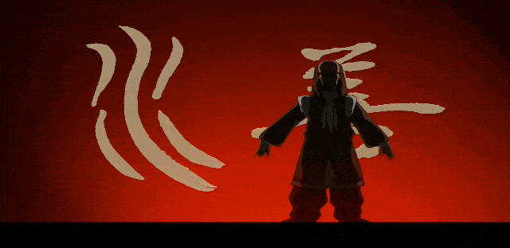

<DOCTYPE html> <!--desenvolvido por Cléberson Pereira -->
	<html lang="pt-br">
		<head>
			<title>Avatar</title>
			<meta charset="utf-8">
			<link rel="stylesheet" href="css\estilo.css">
		</head>
		<body>
			<h1 id="titulo"> Avatar: A Lenda de Aang</h1><!--inicio da página -->
			<figure>
				<!--Imagem apresentando as dobras presentes na animação --> 
				<figcaption>Série : Avatar: A Lenda de Aang</figcaption>
			</figure>
			<ul> 
				<li id="diretor"> Diretor : Joaquim Dos Santos</li>
				<figure>
					
					<figcaption>(Portugal, 22/06/1977)</figcaption>
					<br>
				</figure>

				<li> Lançamento : 21/02/2005 </li>
				<br>
					<li> Sinopse : Os irmãos <strong>Katara e Sokka</strong> acordam o jovem <strong>Aang</strong> de uma longa hibernação e descobrem que ele é um Avatar, com poderes que podem derrotar a Nação do Fogo. </li>
				</ul>


				<h2 id="perso"> Personagens </h2>
				<p>Conheça os <strong> <a href="personagens.html" target = " _blank"> Personagens </strong> </a> </p>
		       
		  <footer> 
		       	 <p> Desenvolvido por Cléberson Pereira - IFMS Dourados - Disciplina Front-End1 </p>
		   </footer>
		   </body>
	 </html> 
